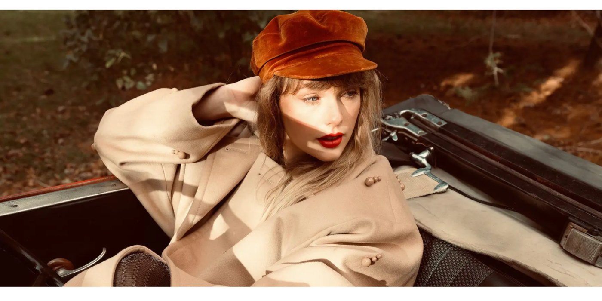

Culture Marketing
Swiftie Culture Moments — Olive Garden
Fast-turn posts that tap into pop culture conversation with guardrails for voice and sentiment.
Recruiter snapshot
- Role: Social lead for culture-moment participation
- Planned real-time brand participation with clear guardrails
- Owned community response playbook + moderation patterns
- Outcome: Engagement lift and brand affinity boost
Case study TL;DR
Role
Cultural moments lead
Scope
Real-time trend participation
Owned
Concept, tone, approvals, distribution
Outcomes
Engagement spike and positive sentiment
Deliverables
Creative brief, asset variants, community responses
How I work
Fast turn with guardrails and learnings

Role
Creative/copy direction + community engagement patterns + optimization guidance.
Strategy
- Developed quick-turn copy patterns that maintain brand voice under speed.
- Used community management to sustain momentum and guide sentiment.
- Balanced “in on the joke” with brand-safe guardrails.
Outcomes
- High engagement and relevance during pop culture moments.
- Positive sentiment without tone drift.
Press + sources
PAPER — brands became Swifties (2021)
Opens in a new tab